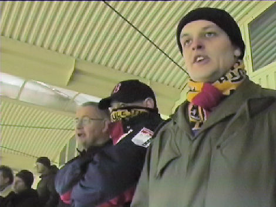

|
Roda JC - Jong AZ (2-1) 25 januari 2007
|
Na balverlies van Sibum kan Hulst alleen op de doelman af. Zijn schot gaat
tergend langzaam in het Roda-doel: 0-1, (27').
Zonder groots te spelen was Roda de ploeg die zich vrijwel voortdurend op de
helft
van de
tegenstander bevond.
De futloze wedstrijd bracht weinig vreugde zodat er geregeld naar de fles werd
gegrepen om dit drama te verlichten.

Niemand werd zo vaak tegen de vlakte gewerk als Ramzi. Scheidsrechter
Van Sichem onthoudt Roda hier een penalty en beperkt zich tot geel voor AZ.
In de 58e min. heeft een van de vele aanvallen eindelijk resultaat: Ramzi scoort
de
gelijkmaker: 1-1.

Het drankgelag en de daaruit voortvloeiende gezangen van deze heren leidt tot de
tweede treffer van Roda JC. Van Tornhout scoort 2-1, (62').
Dieter-Dieter-Dieter....
Kramp in de dikke teen of slachtoffer van een overtreding?
Hierover wordt pittig gediscussieerd.
Kah en Meeuwis warmen zich onder het PSV-dekbed van Huub Stevens.
Cissé alleen op de keeper af. Structureel niks dus.
Een jeugdige fan in Z16.
Slechte wedstrijd, toch bedankt.
Zoals te verwachten voor een midweekse wedstrijd was er niet veel vertier in de
Kickoff. Na een uurtje was het leeg en er kwamen geen spelers op bezoek.
In de volgende ronde speelt Roda tegen RKC uit.
©
Koempels Pleasure Dome
|